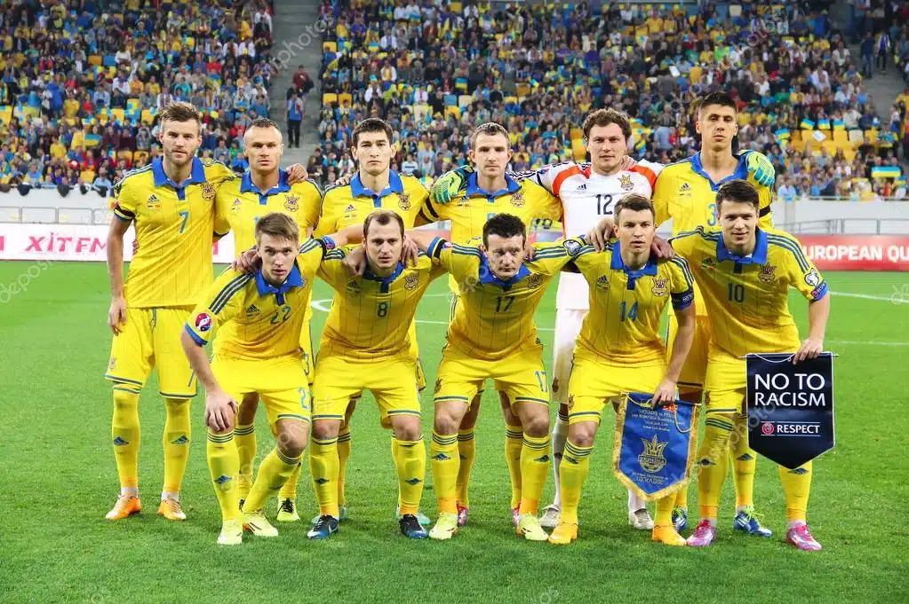

Seleção Ucraniana na UEFA Eurocopa
A Ucrania após eventos extra-campos complicados para o país, vem a Euro em busca de seu primeiro título e trazer um pouco de alegria ao povo ucraniano, com a promessa do Chelsea, Mykhailo Mudryk voando e o goleiro titular na maior parte da UEFA Champions League pelo Real Madrid, Andriy Lunin.
